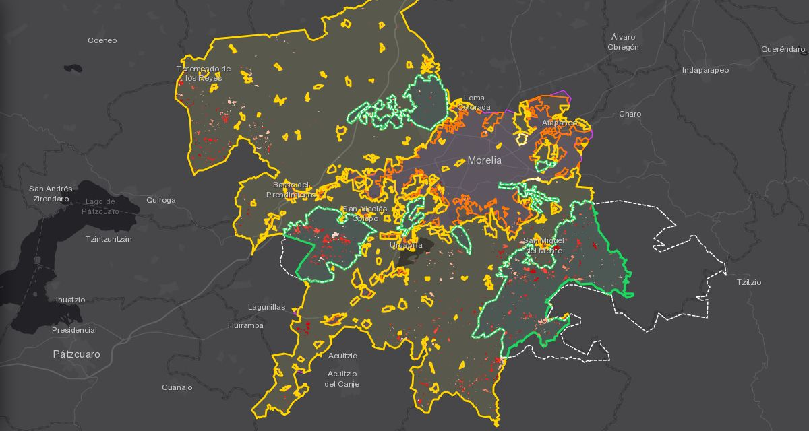

Observatorio Forestal de Morelia
Dónde y cuánto bosque se ha perdido en el municipio de Morelia desde 2006, medido con imágenes de satélite, revisado lugar por lugar y puesto al alcance de cualquier persona.

Qué puedes hacer
Tres maneras de usar el observatorio, según lo que buscas.
Consultar un lugar
Busca una dirección o toca el mapa para saber en qué tipo de suelo del PMDU cae, si está en un área natural protegida y si se detectó pérdida de bosque cerca.
Ir al mapa →Ver cuánto y cuándo
Tablas y gráficas de la pérdida de bosque por tipo, por periodo y por tipo de suelo, con su margen de error y la descarga de los datos.
Ir a los datos →Participar
Con tu registro aprobado, ayuda a revisar el mapa sobre la imagen de satélite, deja aportes y traza tu territorio. Tu historial queda en un solo lugar.
Ir a participación →Cómo se hizo
Un algoritmo recorre año por año las imágenes Landsat de 2002 a 2025 y marca dónde se perdió bosque y matorral. Después se revisaron uno por uno cientos de lugares sorteados en imágenes de alta resolución para medir cuánto acierta el mapa, y con esa revisión se calcula la superficie perdida con su margen de error. El detalle está en Datos.